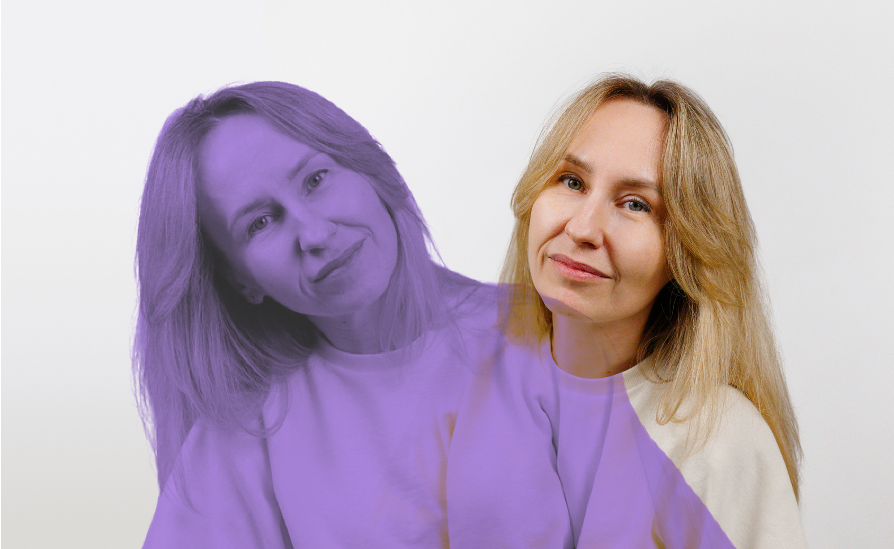

Путь фандрайзера:
из коммерческого PR —
в фандрайзинг —
и в корпорацию
с новыми смыслами
Согласно нашему исследованию, большинство фандрайзеров приходит в сектор из других сфер: 46% из бизнеса и ещё 18% — из государственного сектора, медицины, науки, образования или культуры. Часто этот переход связан с поиском большего смысла в работе или интересом к самим задачам фандрайзинга. Нередко этот переход оказывается не до конца осознанным: порой специалисты ничего не знают про благотворительность, но решают попробовать свои силы именно в некоммерческом секторе (39,1% опрошенных).
Мы попросили троих фандрайзеров рассказать свои истории: как они оказались в благотворительности, с какими трудностями сталкивались, но всё равно продолжали работать и почему некоторые из них со временем решили уйти из сектора и попробовать себя в чём-то новом. Это — история Александры Мавренковой.
«Совет для уставших и разочарованных:
не бойтесь изменений»
«В некоммерческий сектор я попала не случайно — у меня был свой проводник. Моя близкая подруга работала директором по коммуникациям в крупном международном фонде, и именно через неё я впервые увидела эту среду изнутри. Помню, когда она только вышла туда, мы обсуждали людей, которые там работают: они все ходили с кнопочными телефонами — и это в то время, когда вокруг уже у всех были айфоны. Но зато они были с горящими глазами и идеями: тогда это казалось очень необычным. Я несколько раз волонтёрила на мероприятиях фонда в качестве фотографа, иногда приходила к ним в офис на занятия в разговорный клуб английского языка».
Решение перейти в сектор стало гораздо более осознанным позже — в 2022 году. Я работала в западноевропейской компании, и в феврале она сразу приостановила бизнес в России. Около полугода я продолжала оказывать PR-поддержку австралийскому и британскому офисам, но свободного времени становилось всё больше. Тогда же я начала волонтёрить в экологической НКО, которую основал друг моего руководителя.
В августе со мной всё-таки расторгли трудовой договор, и решение уже было принято: я хочу работать в НКО. Моё погружение в сектор оказалось довольно резким. Когда я вышла на работу в крупный благотворительный фонд, оказалось, что преемственности почти нет. Руководитель блока до меня выгорела и ушла, и около полугода обязанности временно исполнял директор фонда. Дела мне фактически никто не передавал — информацию приходилось собирать по крупицам. Уже после выхода на работу я узнала, что блок с названием «Просвещение и маркетинг», которым я теперь руководила, исторически отвечает ещё и за частный фандрайзинг.
Предыдущая команда начала процессы создания нового сайта и доработки CRM-системы, но никаких технических заданий мне не передали. Я получила готовые IT-решения, от которых зависели мои KPI, и вместе с новой командой мы разбирались буквально в процессе работы: почему всё устроено так и «что хотел сказать автор» этих систем. Это был непростой, но очень мощный опыт: пришлось быстро учиться, принимать решения и строить процессы почти с нуля.
В целом я довольно спокойный и оптимистичный человек. Я стараюсь философски относиться к неудачам: если что-то не получилось, нужно просто встать и идти дальше. Поэтому мне кажется, что я не очень подвержена быстрому выгоранию. Но при этом мне было тяжело наблюдать, как выгорают люди вокруг. Невысокие зарплаты, отсутствие быстрых результатов, ощущение, что усилия обесцениваются — всё это сильно давило на команду.
Меня в такие периоды поддерживал коуч. Я вообще человек, которому нужен человек рядом — с кем можно проговорить сомнения, разобрать сложные ситуации. К счастью, в нашем фонде у руководителей была возможность регулярно работать с коучем, и это во многом помогало держаться.
Если говорить о самой профессии, то я довольно быстро поняла важную вещь:
Фандрайзинг — это, прежде всего, выстраивание инфраструктуры. А это всегда долгий и непростой процесс. Поэтому я обычно советую начинающим фандрайзерам не ждать быстрых результатов и окружать себя системными людьми — марафонцами, а не спринтерами. Очень помогает разбивать большие цели на конкретные задачи и продумывать KPI так, чтобы видеть промежуточные результаты.
Миллионы привлечённых рублей редко появляются сразу — этому предшествует большая подготовительная работа. И, конечно, важно не забывать отдыхать. У меня есть простое правило: в свободное время я ставлю в приоритет спорт, отдых, а уже во вторую очередь планирую дополнительные вебинары для профессионального развития.
Со временем я начала замечать ещё одну тенденцию: из сектора действительно уходит много сильных специалистов. Причины довольно понятны. Долго работать на максимальных оборотах, совмещая несколько функций и получая при этом относительно невысокую зарплату, очень сложно.
Плюс когда организация растёт, появляются регламенты, правила, отчёты, обязательные встречи, амбициозные KPI. Между программной деятельностью и фандрайзингом иногда возникает пропасть. Работа всё больше начинает напоминать бизнес — только условия остаются хуже среднерыночных. В такой ситуации люди неизбежно начинают разочаровываться.
Есть у меня и ещё одно наблюдение: из-за невысоких зарплат в сектор часто приходят очень эмпатичные люди с ярко выраженными гуманистическими ценностями. И именно им особенно больно сталкиваться с несправедливой реальностью — как внутри организации, так и в мире в целом.
Поэтому, когда я решила двигаться дальше, я целенаправленно искала работу на стыке бизнеса и благотворительности — в корпоративном фонде или в направлении КСО. Моя профессия — внешние коммуникации — предполагает определённый бюджет. В НКО же иногда сложно тратить деньги даже на PR фонда, когда не хватает средств на зарплаты. В последний год мне становилось всё труднее объяснять отсутствие быстрого фандрайзингового эффекта от работы над имиджем организации. Понимая, что в ближайшее время экономическая ситуация вряд ли улучшится и бюджеты будут сокращаться, переход на сторону бизнеса показался мне самым разумным решением.
Совет для уставших и разочарованных фандрайзеров: не бойтесь изменений.
Пробуйте разные форматы работы. Я знаю специалистов, которых от выгорания спасает работа сразу с несколькими фондами — это даёт больше свободы и разнообразия.
Но самое важное — разобраться в себе. Понять, где находится корень разочарования. Мне очень помогло вернуться к своим ценностям и честно посмотреть, в какие моменты они поддерживаются, а в какие — нарушаются. Когда ценности систематически не совпадают с тем, что происходит в работе, выгорание становится почти неизбежным. Но если это осознать, появляется шанс изменить траекторию и больше не наступать на те же грабли».
К чему все эти разговоры,
смотрите в исследовании
фандрайзеров и их нанимателей